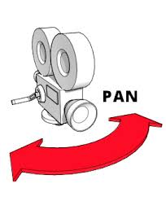
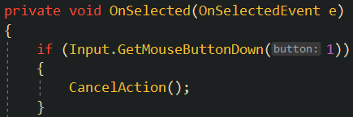
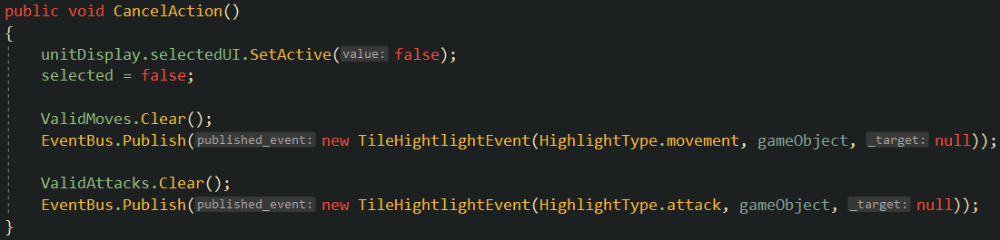
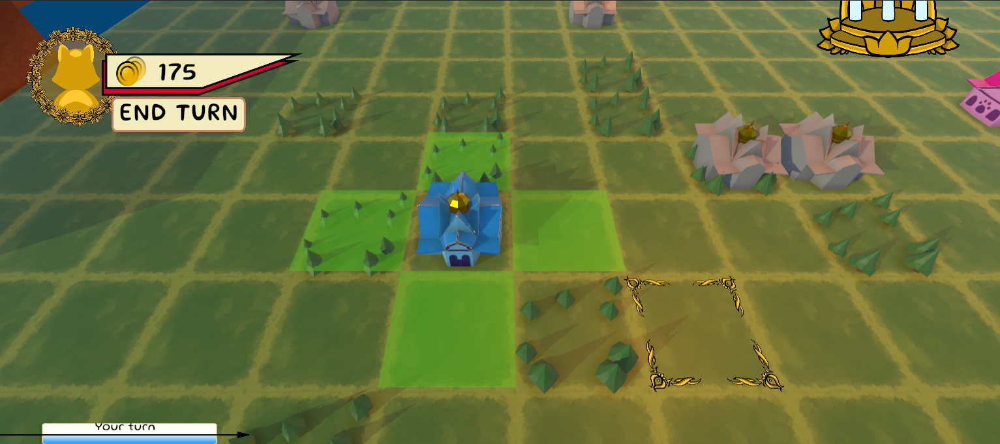

Camera Panning, QOL, & Lots of Bug Fixes
Summary:
This devblog consisted of implementing WASD camera panning and object focusing, some QOL feature implementations, and other minor bug fixes.
WASD Camera Panning & Mouse Middle Button Focusing:
I expected this to take longer than the bug fixes, but I was wrong - it was actually relatively straightforward! We already had camera panning implemented, but it was based off of the cursor position. So, I just went in and added some input checks like so along with the mouse functionality like so: mousePosition.x <= edgeOffset || Input.GetKey(KeyCode.A) { ... } and I did this for each direction. Surprisingly, it worked correctly on the first try! The mouse middle button focus was slightly more complicated.
We also had object focus functionality implemented based on a mouse double click, not a single, middle button click. So, I familiarized myself with the existing code and ran into a minor issue. I was used to writing code like: Input.GetKey(...), but the mouse clicks were tracked using Unity's OnPointerDown(...) function. I wasn't familiar with this, but quickly learned that it executes when either the mouse left, middle, or right buttons are clicked. So, I added a check to see if the PointerEventData variable was a middle button click. However, the current focus function was based off of a double click, so it had functionality to track time between clicks to determine a double click. I created another very similar function that only used one click and everything worked great!
Cancel Actions Functionality:
As you can see in the video above, the player is now able to right-click while the unit movement or attack view is up, which cancels the current action. This sounded simple at first, but turned into a bit of a nightmare. The first place that I thought to look was the Unit script, which is unfortunately over 900 lines of code long. Additionally, there were some pretty glaring bugs with the current master branch of the game which made this bug fix (and others) much more difficult. Sometimes the AI would freeze entirely which forced me to restart a game, sometimes the attack and move buttons would not show up or were very finicky, as well as a multitude of console output errors throughout the gameplay. However, I looked for input queries (Input.Something), but didn't find any until I noticed an OnPointerDown function again. I tried implementing code here, but quickly realized that this function is only called when a unit is clicked on and not any other objects.
So, I needed to some way to check if the user pressed the right mouse button anywhere on the screen, not just on a unit. I struggled with this as I thought it would be easy to just create a script that just checks if the right mouse button is clicked, but it should be tied in with the Unit code, so that didn't make sense. Then, I tried checking for a right click in the Unit.cs Start() function, which did work as far as tracking the click, but because OnPointerDown() called the OnSelected() event function, it carried out the unit movement regardless. So, that's when I turned my attention to the OnSelected() event function.
At the very beginning of this function, I checked if the user right-clicked and called my CancelAction() function if so. In the CancelAction() function, I simply update the selected UI view, disable the selected variable of the unit, then clear both the valid movement and attack tile lists and publish a new TileHighlightEvent to update/disable the tile highlighting UI.
 Currency Gained on Turn End Bug:
This was another bug that consumed quite a bit of time due to some issues with the master branch and just some unforseen problems. The Confluence page on gaining currency has not been updated in quite a bit and some things had changed which also caused issues. However, I found that the player should gain a certain amount of currency per owned city per turn and the commander should also generate some currency per turn. This currency is supposed to be gained on round start, not round end. I began by tracking down everywhere that currency was added to the player (or AI) in the codebase. I then commented out all of these function calls and ran the game to make sure the player didn't gain any currency and began working through each call. To my surprise, the commander currency gain code worked correctly and when I uncommented it, the player gained fifty gold per turn start. Then, I turned my attention to the city currency gain code.
I noticed that the player was gaining double the intended gold when I tested this code. This led me to believe that one of two things could be happening: 1. The player could be gaining currency for all cities on the map (owned by them or the enemy), 2. They could be gaining currency for each city on both their turn and the enemy's turn. Additionally, I noticed that this add currency function was being called on round end and not round start, so I switched it to occur on round start...and it fixed the entire issue! I believe this is because the OnRoundStart event had a check before running to make sure the current player was active (that way the event doesn't execute code when the other player or AI player starts a round since we only want this to happen on the active player's turn), but the OnRoundEnd event did not have this check.
Valid Unit Spawn Tiles Bug:
To spawn a unit, the user clicks on any currently owned city and the valid spawn locations were the tile North, East, South, and West of the city, as well as the tile that the city was on - which was not intended. Units are able to walk on and through a city (they have to stand on it to capture it), but the design team didn't want them to be able to spawn diretly on top of a city. So, I looked into the unit spawn and city code and noticed that the valid list of tile spawn locations was calculated with the following line of code: Physics.OverlapSphere(transform.position, 1.25f);. So, I just added a check before adding a tile to the list that made sure that the current tile (city tile) and the tile to be added were not the same - i.e. don't add the cities tile to the list of valid unit spawn locations and it fixed the issue.
Various Currency Issues:
There are a few ways to gain currency in-game: you begin the game with some amount of currency, you gain some amount of currency per turn always, and you gain some per city you own each turn. There were a handful of issues with this such as gaining double currency per turn as well as gaining currency at the end of the enemy's turn rather than just your own. This ended up being a bit of a time sink as I was unfamiliar with the systems that dealt with this and it turned out to be a bit harder to debug than I had anticipated. It seemed like the currency was updated in a myriad of places which made it difficult to narrow down where these issues were occurring. However, after reading the Confluence page that specifically outlined all of the ways in which currency could be gained, it gave me a bit more clarity on how I should approach this. I eventually managed to identify which currency calls were being called multiple times through trial and error and was able to fix this.
Incorrect Unit Animation Being Played on City Capture Bug:
Sounds harmless, and it probably should have been, but this was the last main bug that turned into a massive time sink. Originally, I planned on just swapping out an animation to fix this. I began by trying to recreate this in-game which took a bit because the AI would sometimes stall indefinitely before I could capture a city and it also only seemed to be happening with certain units. Eventually, I was able to recreate the issue. So, I scoured the Unity project tab to look for animations, which was already a bit of a hassle as the folders are a bit disorganizes and also include legacy stuff from removed content. After not being able to find a city capture animation, I reached out to the art team to find out that there wasn't one...and that they didn't plan on making one... I thought this wasn't a big deal as I could just go in and remove the animation all together.
I began by clicking on a soldier unit in the hierarchy mid-game only to find out that it parented six other GameObjects which each, collectively, parented over twenty other GameObjects. I began looking through those one-by-one to find out where the animation was attached. This took a while and I resorted back to looking through the Unity project tab and after searching and searching I was finally able to locate the correct animation. I then checked the name of the animation trigger and searched for where it was being called in the codebase, but I was a little confused. It was only being called in the ChangeHealth() function which didn't make any sense. I went back into the game and ensured that the unit's health was the same before and after capturing a city and playing the take damage animation.
I looked into everywhere that the ChangeHealth() function was called and found my answer. The ability to heal a unit had been recently added by another team member and a unit was able to be healed by standing on top of a city. The heal functionality called the ChangeHealth() function, which in turn played the take damage animation. So, I added a condition to check the passed in delta value of the function and only played the animation if it was negative (i.e. the unit is taking damage) and not when it was positive (i.e. the unit is gaining health).
Removed the Tutorial End Turn Button
This was pretty simple. Our team member in charge of creating the tutorial wanted this to be removed, so that the player would instead have to follow along with the tutorial prompts and not end turns and play however they want at the beginning of the tutorial. After I removed it, I just had to make sure it didn't break anything else that may have relied on it and it was good to go.
Summary:
Overall, I was able to fix some pretty annoying bugs this week and implement some cool new features. I think I'm learning to navigate a large codebase much more efficiently and learning about both Unity techniques and industry techniques that I did not know before I joined the club.
Two Week Time Breakdown:
- Studio Meetings: 4.5 Hours (one meeting ran very long & we had a separate, QA meeting after both weekly meetings)
- Studio Communication: 0.5 Hours
- Documentation Reading (Confluence): 0.5 Hours
- WASD/Middle Click Camera Panning: 1 Hour
- Action Canceling: 3.5 Hours
- End Turn Currency Gain Bug: 3 Hours
- Units Spawning on City Bug: 1 Hour
- End Tutorial Button: 0.5 Hours
- Wrong City Capture Animation: 3.5 Hours
- Total: 18 Hours